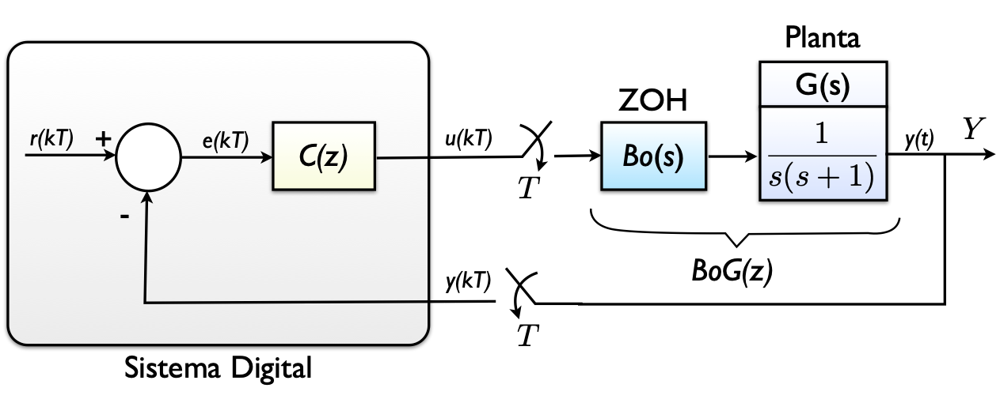
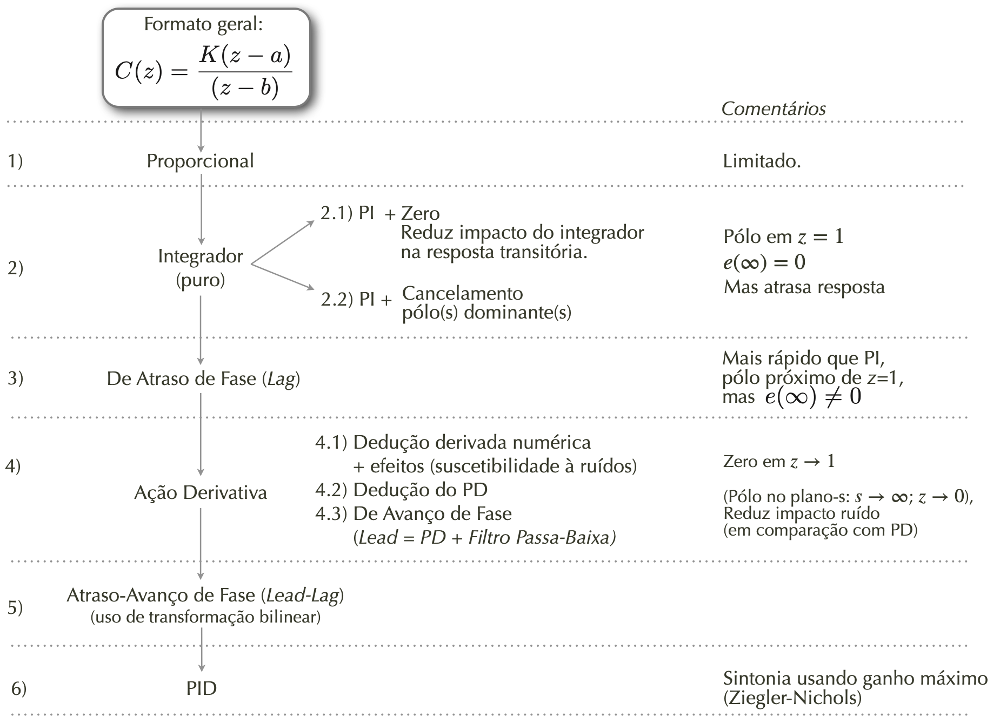
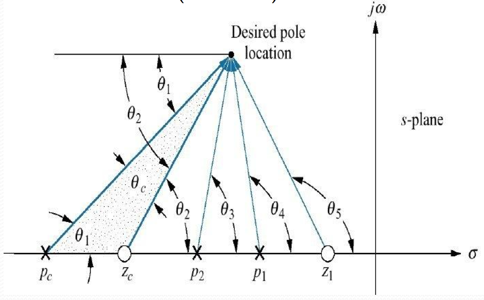
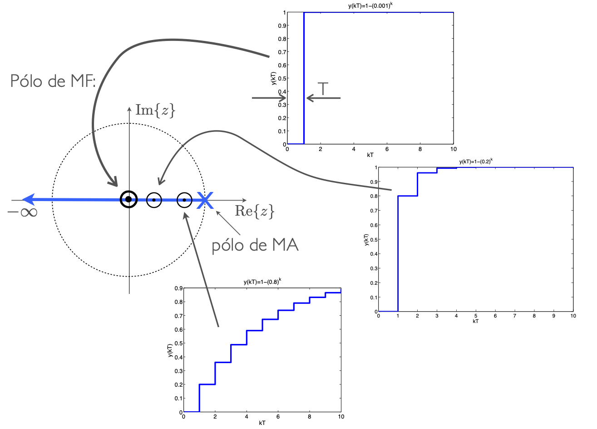
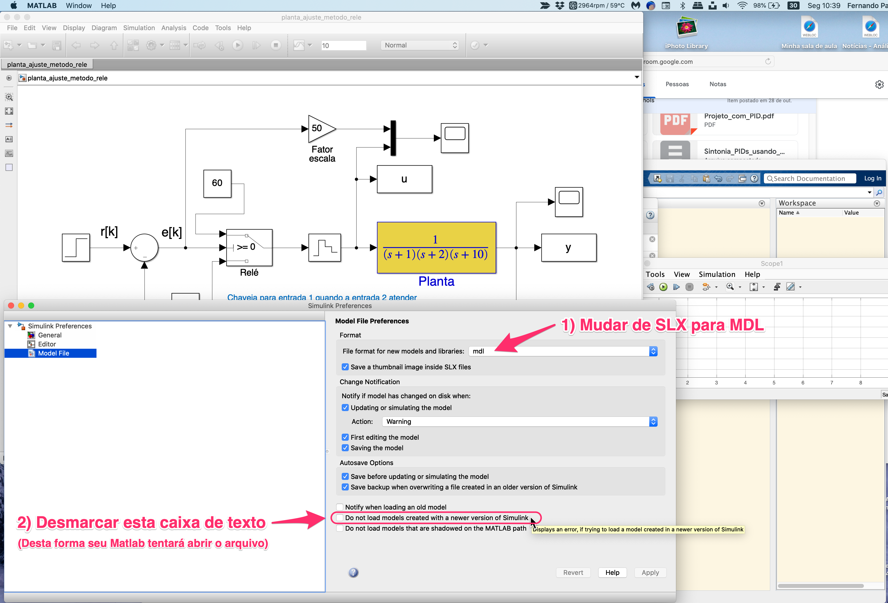

Curso de Controle Automático III

Tópicos:
1. Introdução
- Introdução à disciplina;
- Sequência prevista para as aulas;
- Sugestão de instalação de MATLAB para esta disciplina;
2. Teorema de Amostragem
- Teoria Sistemas de Amostragem
Modelagem do processo de amostragem; Diagramas espectrais
Resumo gráfico processo de amostragem de um sinal...

-
Simulação demonstrando Teorema da Amostragem (Amostrando uma onda dente-de-serra)
-
Material opcional:
3. Transformada Z
-
Parte 1: Definições, conceitos iniciais, primeiras transformadas;
-
Parte 2: Transformadas de alguns sinais, Propriedades da Transformada Z;
-
Parte 3: Métodos de Transformada Inversa de Z;
-
Modelagem do Sustentador de Ordem Zero (Z.O.H., ou
). -
Incorporando o Sustentador de Ordem Zero, cálculo de
deduções e simulações (1o-exemplo de sistema de 1a-ordem digitalizado) -
Resumo final Transformada Z (partes principais).
Malha típica de sistema de controle digital

4. Teoria do Erro
5. Estabilidade
- Estabilidade
Método de Jury: Aplicação
6. Projeto de Controladores: Estudo de Caso:

-
Controlador com Ação Proporcional:
-
Controladores com Ação Integral:
-
Controlador Proporcional com ganho definido em função do
, aula de 23/09/2021. (Inclui Controlador I, PI (com estudos de opções de local para zero do controlador)) -
Controlador com Ação Integral Pura + Controlador PI (c/dedução) + PI com cancelamento do pólo dominante: Aula de 14/05/2020;
-
Projeto de PI = Controlador Proporcional + Integral Puro (aula de 07/10/2020);
-
Outro projeto de Controlador Ação Integral Pura e PI, incluindo comparações (05/05/2021).
-
O que acontece quando se tenta acrescentar +Integradores em Sistema tipo 1 ? [aula de 07/10/2021];
-
Projeto de Lag (com teoria) (PDF);
-
Projeto de Controlador PI + Lag (aula de 14/10/2020)
-
Controlador por Atraso da Fase (Lag): Aula de 21/05/2020;
-
-
Controladores com Ação Derivativa:
-
Teoria sobre Ação Derivativa + Filtros:
- Derivador Puro
- Amp.Op. como Derivador Ideal x Amp.Op. Derivador Realizável;
- Efeito da Derivada sobre Sinal Ruidoso (simulações);
- Uso de Filtro Passa Baixa (FPB);
- Equação + Diagrama de Bode de simples filtro RC (1a-ordem);
- Filtro Exponencial Digital de 1a-ordem;
- Filtro Exponencial Duplo (de 2a-ordem);
- Filtro de Média Móvel;
-
Dedução Controladores PD & Lead) (arquivo PDF; Aula de 21/05/2020);
-
Projeto de PD (sem contribuição angular) (Aula de 28/10/2020)
-
Projeto de Controlador PD (Aula de 28/05/2020): Avaliando diferentes posições para o zero do PD + Projeto de PD usando contribuição angular usando scripts:
angulos2.m(arc.m) +arc.m(arc.m). -
Projeto de Lead (Aula de 11/11/2020); (Usando Contribuição angular.)
-
Teste de Controladores com Ação Derivativa (Simulink) (Simulaçãoes ressaltando elevadas ações de controle; uso de bloco Saturador no Simulink)
-
Revisando idéia geral sobre Contribuição Angular

- Controlador Deadbeat -- projeto(s):
-
Teoria Controlador por Tempo Mínimo PDF(PID/exemplo_tempo_minimo.pdf);
-
Amplitudes das ações de controle (Lead, Lead x outros), Projeto de controlador deadbeat - Aula de 04/06/2020 ;
-
Conceito geral por trás do Controlador deadbeat

-
Projeto de PID (com ajuste por Ziegler-Nichols)
- Ver parte final deste PDF (arquivo original inicial do "Estudo de Caso", versão de 2020);
- Implementação Real de Controladores Digitais:
- Equações de Diferença
Controladores Digitais (dedução do algoritmo de controle); - Implementações de algoritmos de controle digitais
- Exemplo de implementação real em laboratório: Processo da Bola no Tubo (TCC de 2006).
- Equações de Diferença
EXTRAs:
- Usando App Control System Designer (pequeno Tutorial);
- Simulações de controladores Digitais usando Simulik (PDF) (Lidando com "Data types" das janelas Scope);
- Sugestão de instalação de MATLAB para esta disciplina;
Como abrir arquivos SLX originados de diferentes versões do Matlab/Simulink

- Versão 2020 de "Apostila" criada para esta disciplina (incompleta)
(c) Fernando Passold, página atualiza em 28/05/2020, 04/06/2020, 11/11/2020, 07.04.2021, 11/03/2023, 04/08/2023, 16/10/2023.